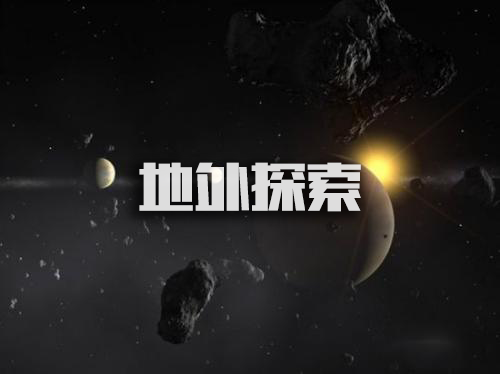
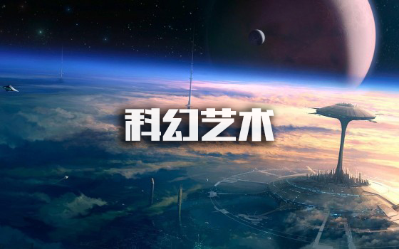
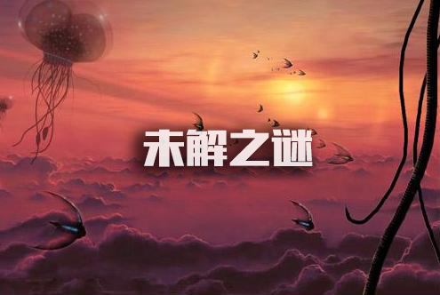

探索:视觉盛宴
- 
- 
- 
地外生命
研究途经
截止2013年，限于科学水平的发展，科学家们对地外生命的研究途径尚比较有限。其中之一是将实验仪器送入其它行星，但这种方法有局限，无法大量开展。还有一种想法是，假设宇宙中存在具备相同或超过我们这样水平的智能生物，通过电波与其联系。可是由于可能的文明距离我们至少也有几十光年，若能收到回复，也已是百年以后，这是很不现实的。因此，我们不能单纯通过通讯手段，而应借助于实验手段。我们虽没有一个切实的实验方法说明生命是物质演化的必然结果，但如果物理和化学规律是宇宙中的规律，而且我们在实验中精确回溯了生命在地球上存在的途径，就可以使人更有理由相信宇宙中也存在生命。
化学特性
多年来，科学家推测地外生命存在的可能性，并进行了搜索，但仍没有探测到地外生命的存在。科学家假定，地外生命的化学特性必须具备:1、适合于化学反应的介质;2、原子物质在宇宙中普遍存在并有不稳定结构。地外生物学或地外生命的研究，就是在银河系的行星及卫星中调查生命存在的可能性。长期以来人们想象火星为有生命的行星，但经过几次人类探测器登陆火星，这个想象被打破了。从20世纪60年代初，天文学家就尽力向被假定技术先进的文明世界发射探索信号。如波多黎各的阿雷西博天文台的305米的阿瑞斯波射电望远镜，功率大到可使距离1000光年的远处接收到发射信号。同样，哈勃望远镜可以观测到太阳系外的恒星及行星的电磁谱线。通过光谱分析，天文学家可以测定大气分子的温度、类型和丰度，并可依据地球上所知推测某些天体上生命所必需的元素。最广泛的正在进行的计划是美国地外智能的探索(SETI)，它集中接收并分析来自宇宙空间的信号。
地外生命
按照人类已掌握的知识来认识地外生命，是一种科学的探索。我们不能抛开知识体系去任意想象。比如，我们不能说有一种生物可以在太阳上生活。现有的知识告诉我们:生命不可能在恒星上形成，但生命的诞生、存在和发展又绝对离不开由恒星的光和热所提供的能源。因此，生命出现的第一个条件必然是在恒星周围要有行星存在。通常认为恒星是由气体尘埃云坍缩而形成的。如果密度很低的原始星云在自身引力作用下收缩，逐渐变为一个自转着的扁平圆盘，那么中央主要部分因密度增大、温度升高发生热核反应而形成恒星，周围的薄盘就有可能形成行星系统。
地外智慧生命
美国国家航空航天局日前宣称，地外生命探索工程已取得巨大进展，在目前发现的2000多颗类地行星中，一些行星存在生命痕迹，这意味着人类有望在今后20年内发现地外生命，在30年内或找到地外智慧生命(俗称"外星人")。
寻找地外智慧生命，其实早已脱离了科幻小说的范畴，成为一项严肃的科学探索。早在1960年，美国天文学家弗兰克·德雷克在美国西弗吉尼亚的国家射电天文台，就开始了人类历史上第一次有目的、有组织地在银河系里寻找地外智慧生命的"奥兹玛计划"。从那时起，各种监测地外智慧生命信号的计划便从未停止过。
除了采取"被动监测"的方式寻找地外智慧生命外，科学家还尝试主动联系它们。要进行这一活动，首先遇到的无疑是"语言"的问题。科学家们一直猜测，数学语言可能是每个文明的共同语言。美国天文学家、科普作家卡尔·萨根在他的专著《宇宙联系》中表示，宇宙中的技术文明无论差异多大，都有一种共同的语言--数学语言。中国数学家、语言学家周海中也指出，数学语言具有科学性、准确性、简洁性、抽象性和普适性等特点，是宇宙交际的理想工具。因此，数学语言就成了人类与地外智慧生命联系的首选媒介。美国加州"地外文明搜索研究所"的科学家们正计划将维基百科的全部内容编译成数学语言信息，通过射电望远镜发送至20光年以外的太空，并希望地外智慧生命能接收到这些信息，借此了解地球文明。此外，科学家们还尝试用图像、音乐、发送实物等方式，尝试与地外智慧生命取得联系。
英国物理学家史蒂芬·霍金对地外智慧生命的存在也深信不疑。但他警告，人类主动与它们联系或许会招来灾祸。尽管如此，不少科学家还是乐观自信、积极主动地寻找地外智慧生命，如美国天文学家赛斯·肖斯塔克最近就表示，我们应争取主动与它们建立友好关系，同时加快寻找它们的步伐，寻找的过程比获得的结果更有意义。
寻找地外智慧生命是人类探索未知世界的过程，也是人类认知宇宙和生命的过程。如果找到地外智慧生命，那将是科学史上最重大的发现之一。不过，人类是否已经做好准备，接受来自宇宙另一端的"邻居"?这其实也是一个需要人类思考的问题。

地外探索
简介
1959年，莫里森和可可尼在自然杂志上提出，如果存在地外文明社会，当前的人类科学已经具有与地外文明社会单方面通讯的能力，并且论证了如何利用电磁波与地外文明通讯的问题，对当时的学术界提出了地外文明探索的看法，从而开始了地外文明探索。
1960年，德拉克等人利用美国国家射电天文台的射电望远镜，首次实施地外文明探索计划，这项计划被称为奥兹玛计划。
60年代以来，对离地球最近的500 颗星进行了监测，但尚未发现来自天体的 人工信号。 1973 年发射的先锋11号宇宙探测器上装配了包括人体形象和太阳系组成的行星以及100 多张地球文明和风景的幻灯片，记录在镶金铜版上的各种语言和音乐，音响此物为SETI计划负责人伟大的Kall Sagan博士的妻子设计。在 8 万年后，先锋号离太阳系约3 光年，也许会遇上在星际航行的地外智能生物，并被它们捕获为礼品。1984 年国际天文学联合会的专门组织首举行了地外文明问题讨论会，并对90年代的进一步探索地外文明问题定出了研究计划。
1974年11月16日，美国利用设在波多黎各的阿雷西博305米直径的射电望远镜，发出人类第一组信号，对准武仙座球状星团，发射3分钟。50多年来，科学家们除了采取被动的方法来监听外星人发送的信号外，还通过各种方式主动联系它们。如何联系它们?科学界主流认为，这就必须与外星人进行宇宙交际。要进行这一活动，首先遇到的无疑是“语言”的问题。意大利哲学家、天文学家伽利略曾说过：“数学是上帝用来书写宇宙的文字”。基于这种理念，卡尔萨根深信,宇宙中的技术文明无论差异多大,都有一种共同的语言——数学语言。中国数学家、语言学家周海中在1999年发表的经典文章《宇宙语言学：一门新兴的边缘学科》中指出，数学语言具有准确性、简洁性、抽象性、逻辑性、普适性、形式化等特点，是宇宙交际的理想工具。
历史沿革
外星文明探索简称为SETI（Search for Extra-Terrestrial Intelligence），它已成为地球人类的重大研究课题。我们知道，波兰天文学家哥白尼（N.Copernicus, 1473-1543）于1543年出版了著作《天体运行论》，指出太阳是一颗恒星，地球和其他行星绕日作圆周运动。这一理论被普遍接受后，人们认识到地球只是一颗普通的行星，绝非宇宙的中心。那么，在类似的演化条件下，宇宙中某些地方也可能有智慧生命存在；德国天文学家开普勒（J.Kepler, 1571-1630）即持这种观点。
1979年，I.Asimov推测银河系中可居住行星多达6.4亿个，因此即使只有万分之一行星有高级生命，数量也非常可观。美国宇航局（NASA）的科学家则估计，宇宙中约有1023个恒星，而银河系中约有2×1011个恒星系统。银河系中的2000亿颗恒星中大约有10% 拥有巨大的、很容易发现的行星；看起来很有可能其余恒星中的大多数周围也有行星存在。这些行星中一定会有类似地球的星体。事实上，地球上的智者早就对“外星智慧生命是否存在”的问题表示关心了。
1820年，德国著名数学家F.Gauss提出，可在西伯利亚的森林里找出一片直角三角形的空地，然后在三角形里种上麦子，以三角形的每条边为底边种上一片正方形的松树，这就组成了勾股定理（Pythagoras定理）的证明图，如果有外星人路过地球附近，看到这个巨大的数学图形，便知道这里有智慧生物居住了。
然而，真正有价值的、使用现代仪器的探索开始于20世纪60年代。 1960年4月8日，美国人Frank Drake将一副直径25米的射电天文望远镜指向了太空中两颗附近的行星—— εEridani和τCeti。他的目标很明确，那就是寻找来自地球以外智能生命的讯息。
后来，他使用西弗吉尼亚的10个大型射电望远镜，接收宇宙中的无线电信号并进行分析，寻找1.42GHZ附近的有规律信号。这个叫做OZMA计划的活动标志着一个新研究领域的诞生：寻找地外智慧生命。F.Drake是St.Cruse加州大学的天体物理学教授，兼任外星智能调查所的所长。该所位于旧金山以南55km，监听频率为1~3GHz的频段（这里的背景噪声最低）。由于自1993年美国国会宣布不再支持原来的研究计划，该所一度面临困境；后来由于私人捐助才坚持下来。现在他们的工作称为“凤凰计划”（Project Phonix），并且与澳大利亚科学家合作，在那里有先进的射电天文设备和波谱分析仪以及大型计算机。
早期进行研究的还有美国哈佛大学的Paul Horowitz教授。从20世纪60年代起，他领导了“太空多通道分析”计划，它在800万个频道（每个宽0.05Hz）上，用巨型射电望远镜探测太空，对收到的信号作自动分析。
探索方法
①接收并分析来自太空的各种可能的电波。这方面的工作从1960年就开始了。
②人类主动向外太空发出表明人类在太阳系内存在的信号。1974年11月16日，美国利用设在波多黎各的阿雷西博305米直径的射电望远镜，发出人类第一组信号，对准武仙座球状星团，发射3分钟。
③发射探测器去登门拜访外星人。美国发射的“先驱者”10号和11号，“旅行者”1号和2号，都在完成对太阳系内的探测任务后，带着许多人类的信息，作为人类使者，漫游在恒星际空间。如果巧遇人类的知音，他们将从探测器中了解人类的活动，确定进一步交往的可能。由此可见，探索地外文明是一项综合性的科学使命，过于乐观是不现实的，过于悲观也是没有根据的。
理论依据
一、20世纪以前的世界多元论与世界一元论：20世纪以前，关于外星文明的探讨争论主要停留在哲学领域，没有什么比较具体的科学理论。争论的双方可以简单概括为世界多元论与世界一元论。多元论认为象人类这样的文明世界宇宙中有许多个，一元论者则相反，认为人类是宇宙的独生子。
二、哥白尼原理：十六世纪波兰天文学家哥白尼提出“日心说”，推翻“地心说”，这一学说不仅是天文学上的一场革命，也是人类思想史上的一次革命。它深深改变了我们对自身位置所在的根本看法。由哥白尼的日心说精髓，科学家提出了所谓哥白尼原理。这个原理认为，地球不是宇宙的中心，地球人类也不享有在时间或空间中的优先地位。由此理所当然地证明，生命现象和文明现象并非地球唯一 ，而是在宇宙普遍存在，我们不可妄自尊大。
三、星际通讯理论：要实现与外星文明的联系交流，方式有两种：一是星际航行，二是星际通讯。前者显然过于遥远，而后者无疑要容易得多，但需要确立一套正确的理论。迄今一无所获。有科学家认为，无线电通讯可能还是太原始了，外星文明使用的是某种不为我们所知的先进通讯方式。
四、德雷克的“宇宙文明方程式”：在所有分析判断外星文明发生的机率和可能性理论中，美国天文学家弗兰克·德雷克于1961年提出的"宇宙文明方程式"，也就是德雷克方程，无疑最为著名，也最富科学价值了。
五、“人择原理”和维仑金平凡原理：人择宇宙学原理（简称人择原理）由鲍罗和泰伯拉提出。这条原理很复杂，但简而言之，即谓正是人类的存在，才能解释我们这个宇宙的种种特性，包括各个基本自然常数。因为宇宙若不是这个样子，就不会有我们这样的智慧生命来谈论他。
六、宇宙文明三阶梯论：宇宙中普遍存在文明社会，而各个文明社会之间则决不会处于同一水平线上，他们无疑会呈现出多层次性、多元性。因为宇宙已存在上百亿年，而地球年龄不到它的一半。人类文明充其量也不过上万年的历史。
七、宇宙文明传播假说：瑞士学者埃里希˙冯˙丹尼肯因出版《众神之车》、《人类，外星人的子孙》等书而名声大噪，也因此背上了“伪科学”的恶名。丹尼肯的主要观点是，人类并非自然进化的产物，而是来自地外文明。地球人是外星人的子孙。地球上各民族早期关于“上帝”、“神”的形象来源于“外星人”。
八、多四季理论：多四季理论的提出者并非高院或研究所的专业科学家，而是名普通的工程师，这就注定了这个理论信受冷落，甚至讥为“伪科学”的遭遇。不过，这并不影响我将其视为关于外星文明重要理论之一的基本估价。
九、“活以太”与宇宙生命多元论：地外智慧生命如果存在，会处于何种形态与形式呢？绝大多数科学家都是以地球生命为蓝本进行推测。正如美国天文学家、著名的太阳系外行星搜索者巴特勒指出：宇宙其他地方的生命很可能必须建立在碳和水的基础上。否则，我们所有的推测将失去依据。
十、“宇宙沉默”与“动物园假设”：坚信地外智慧生命存在的科学家常常会遇到这样的诘难：既然存在先进的外星人，为什么不与我们接触？这个问题，被称为“宇宙沉默”或“心理真空”问题。研究探索者们对此有许多回答，其中有一种很有趣的假说，叫“动物园假设”。按照这种理论，外星人确已从遥远的某地观察到了地球的人类但他们与地球人类之间存在着巨大的文明差异。
科幻艺术
未解之谜
1.“Wow（哇）”讯号
1977年，俄亥俄州立大学的大耳射电望远镜曾一直监听深层太空中的信号。“大耳朵”则是在1963年建造，目的是为了监听恒星发出的宽频无线电信号，但在1973年，它被转变为SETI(搜寻地球外智慧生命)来使用，并开始在天空中寻找更具体的窄频信号，对于我们来说，这些信号可能意味着智慧生命的存在。然而，在上世纪70年代，对传入的无线电信号的分析并不具体详实（主要是记录频率、信号强度和频宽），不过到了1977年，研究分析和仪器设备在当时已经足够完善和充分，且可以让科研操作人员掌握跟以往不一样、有趣的研究结果。
1977年8月，天文学家杰瑞伊曼正在通过“大耳朵”研究计算机打印输出的信号时，他偶然发现了一系列的数字和字母（最终，这些数字后来变得很出名），像6EQUJ5，也就是大名鼎鼎的“Wow”讯号，其似乎是没有任何危害,但连同其他数据,它就代表了大约1420兆赫的连续窄频信号,当伊曼在纸上看到这一序列时，他很惊喜地把它圈了起来，立即在空白处写道:“Wow哇！”，随即该讯号也因此而得名。
多年来，伊曼和其他一些人反复地搜索信号，并试图为其存在提供更能让人理解的说明。但是，在排除了航空器、小行星、反射地面信号、星际霹雳作为替代来源之后，他们唯一无法排除的解释就是外星智慧生物。
2.1991 VG
1991年，美国天文学家詹姆斯斯科蒂在天空中发现了一些奇怪的东西。从他的第一次观察中，他预测了这个物体会再次出现在那里，但是当他用望远镜看向那个位置时，却未能发现这个物体。奇怪的是，后来，他只是偶然在观察中才又瞥见了它。
当他根据事实推理的时候，他意识到这个奇怪的物体在绕着太阳旋转并且和地球的轨道非常相似。这对于一个自然物体来说是相当罕见的，因为空间距离和万有引力通常会扰乱它的轨道，并会将它送上新的轨道。唯一可行的解释，就是这些物体曾为冷战时期向太空发射的各种太空残余，比如土星5号，或者一些俄罗斯的太空硬件。但是，当这个物体的轨迹在1973年前后被标绘成最后近地时，不可思议的事情发生了，它与那个时代的任何已知发射都没能匹配上，这使得整个事情成为了一个谜。后来有的研究者猜测可能是一个外星太空探测器。
3.黑洞时空旅行
2012年，美国宇航局（十有八九）发现了一个巨大的黑洞从星系中“脱离”开，科学家观察到它以“每小时几百万英里”的速度疾驰而过，就像被“扔出来”那般，想到如此巨大的黑洞却发生这样的现象，这就变得很奇怪了。正如领导发现黑洞这项研究的天文学家弗朗西斯卡西瓦诺解释的那样，这个黑洞比太阳大数百万倍，而这个星系只是把它“打包发送了”出去。
关于这是如何发生的，科学家有一些理论，尽管没有一个是被证实的。西瓦诺和她的团队推论：两个星系(和每个星系中的黑洞)合并了;由此产生的引力波使这个现在单一的“洞”产生了强劲的推动力，使它能够“脱离开来”。与此同时，另一种理论为涉及三个超大质量黑洞相互碰撞，其中最轻的一个被踢出了整体结构。目前的数据能支持引力波理论，但没有任何证据能够证明巨大的、无形的物体在太空中超急速穿行。
4.ASASSN-15lh
超新星爆炸是人类见证过的最大爆炸之一，就像大多数的大爆炸一样。下面介绍的就是asassn-15lh的例子，这是一颗在2015年6月首次观测到的超新星，它源于28亿光年之外。
让asassn-15lh与众不同的是，科学家们无法对其全面完整地解释。与普通的超新星不同，asassn-15lh的亮度是10倍，而且威力更大。而且，当天文学家分析它发出的光时，他们竟然无法找到氢存在的证据。不过，也存在一种最佳的解释：一种被称为磁星的磁性中子星，它通过快速旋转和强大的磁场，可以为不断膨胀的过热气体提供额外的能量。然而没有多久，asassn-15lh释放的能量要比磁星所能提供的要多，而且它还在继续运行。
但奇怪的事情并没有就此止步。通常超新星的表现包括一道明亮的闪光，然后是缓慢的消退。虽然asassn-15lh最初也是在这样的过程中开始运行的，但几个月后它开始消退，紫外线又开始增加。对于超新星来说，这并不是完全未知的行为，但是射线光并不符合通常的状况。科学家们仍然对此无法完全解释。
5.编号KIC 8462852
KIC 8462852是一颗距离地球约1400光年的天鹅座中的恒星。不像在轨道上有颗恒星那样，这颗恒星的亮度下降了20%，而且它们绝对不正常。一种解释是，一团彗星碎片在恒星周围形成了紧密的轨道，但另一种理论提出了更令人担忧的问题。
1960年，物理学家弗里曼·戴森提出了一种理论，认为智慧的外星文明可能会发展到一个需要比单一星球产生更多能量的程度。他的理论是，这样一个先进的文明可能会建造一个叫做“戴森球体”的巨大的轨道结构，其能够获得其中系统恒星很大一部分的太阳能量，并使其大部分受用。这样的“巨型结构”将捕获大多数恒星的可见光，但仍会发射一些红外线辐射，利用此点，因此而识别。但上述仅仅是停留在理论之上，科学家们也无法对此解释清楚……
6.巨引源
巨引源位于一个被天文学家称之为“回避带”的区域中，很讽刺的是，我们无法回避它。之所以无法躲避，是因为它正好位于银河系最密集部分的另一边，因此通过所有的恒星和大量的太空尘埃云来观察它几乎是不可能的。尽管如此，天文学家们已经将一些仪器转向了巨引源的方向，并确定在该地区有一堆以前未被发现的星系，但仍然没有足够强说服力的解释。
7.暗能量
1998年，哈勃望远镜发现宇宙膨胀的速度比以前快得多。从那以后，NASA一直在努力弄明白为什么。他们之后掌握了一些理论，就像NASA所称的“充满空间的能量流体。”虽然这种“能量流”还没有被证实，但他们仍然把它称为“暗能量”。
那么什么是“暗能量”呢?其实科学家们真的不知道。事实上，我们所能确定的是，它比光能有更多的能量。美国国家航空航天局估计，宇宙暗能量约为68%。暗能量的“表兄”，像是神秘的“暗物质”，占了宇宙的27%。剩下的5%则是“光”能量。
爱因斯坦地心引力理论的一部分涉及到了一个“宇宙常数”，即看似真空的空间里充满了它自己的能量。这种能量将由空间产生，因此当宇宙膨胀并创造更多的空间时，额外的能量将使宇宙的移动速度更快。但是既然我们不知道空间是如何形成自己的能量，那这就又成为了另一个未经证实的理论而已。
8.宇宙将如何终结？
几乎可以肯定的是，地球终将会死亡，因为那时太阳会膨胀成一个红巨星，它会将其烧焦。然而，更不确定的是，宇宙本身何时会死亡，以及如何死亡。我们唯一能确定的是，未来它将会发生。
据报道，一些科学家认为宇宙将会在“热寂”中毁灭，而“热寂”将会使不同物体间的热量差异变为零。一切都是由于热量的不同而起运转，那么统一的温度就意味着什么都不会起作用了。最终，热量本身就会死亡，整个宇宙将会在绝对零度以上的温度(-459.67华氏度)中冻结。
还有就是“大挤压”理论，认为宇宙将会继续膨胀，直到它膨胀了不能再膨胀。然后，所有的东西都会收缩，坍塌到自己的内部，形成一堆非常热的物质，就像宇宙大爆炸之前一样。还有一种“大变动”理论，即暗能量的泡沫会吞噬我们的宇宙，它们会在分子水平上改变物质，使所有的东西都变得不适宜，甚至形成不了原子。或者宇宙“大撕裂”，暗能量会膨胀，变得更大，把银河撕成碎片?我们没有证据证明宇宙会以这样的方式结束，所以魔王象希望不要“亲临”这一天的到来。
9.伽马射线爆发
伽马暴(GRBs)并不经常发生，而且考虑到它们基本上是巨大的、超长的能量爆炸(最近一次是2013年的GRB 130427A，持续了20个小时)，这反而是一件好事。然而，他们的“稀缺”意味着我们对其的了解并不多，即使有一天我们可能会因此而灭亡。
我们不知道GRB到底是什么，也不知道它们是怎么发生的。正如航天局解释的那样，GRB可能是由低能量的伽马射线引起的，一旦暴露在太空中，就会爆发高能射线。一项2014年的研究显示，频繁的GRB爆炸让宇宙中的大片区域完全不适宜居住。该研究还说，在地球的历史上，可能至少有一次大规模灭绝事件。虽然我们可能不会有后续的GRB，但这仍然只能算作是“可能”。
10.波江星座超巨洞
在对宇宙微波背景进行的一项调查中，第一次发现了波江星座超巨洞的存在。宇宙微波背景是宇宙早期的电磁残留物，在太空中仍在呼啸而过。当科学家仔细观察时，他们注意到了一个“冷点”在波江星座的方向上。随后的观测发现，波江星座超巨洞是一个出乎意料的巨大且非常空洞的空间，其直径约为10亿光年。其他的时空空洞已经被发现，尽管这个超巨洞是如此之大以至于不能用现在的宇宙理论来解释，这也很令人堪忧啊。
尽管如此，科学家们还是很喜欢提出新的理论，其中的一些却非常有创意。最直截了当的想法是，存在着一个超级、超级、超大质量的黑洞，它的质量是由成千上万个星系组合而成。在一定程度上其将有能力吸收所有的恒星、行星、尘埃、光、暗物质和宇宙微波背景辐射，并在每一次吸收中变得越来越强大。
11.僵尸恒星
2014年8月，美国国家航空航天局宣布发现了一颗恒星系统，然而同时，该系统也成为了超新星爆炸的牺牲品，随即科学家就对这颗恒星命名为了SN 2012Z。通常情况下，当恒星发生超新星时，就意味着其已经毁灭了，但在这种情况下，科学家们却发现该系统的一颗小恒星的一部分可能是作为一种僵尸恒星而幸存了下来。如果这是真的，这很可能是因为超新星威力太弱。爆炸会损坏一颗无法修复的恒星，但不会彻底摧毁它，留下的就是一颗“僵尸恒星”。目前还没有正式确认这类僵尸恒星的存在，但这是对一些恒星如何被炸成碎片的最好解释。
另外一个称为“僵尸恒星”的理由是:当它们在吃其他的恒星时，它们会表现出“嘶吼”。美国国家航空航天局解释到，一些看起来已经灭亡的恒星会发出高能x射线很可能是它们的“嚎叫”或“尖叫”。如果这还不够怪异，他们就会“尖叫”，同时吸走附近其他恒星的能量，实质上是在享用它们。但是航天局还不知道他们是如何发射这些x射线的，他们只考虑了它们的灭亡。
12.暗流
可观测到的宇宙大约有900亿光年，但专家认为整个宇宙至少还要再大250倍。很明显，一些东西正在影响着我们所能看到的银河系。
2008年，美国宇航局的一个太空团队在遥远的星系团中发现了奇怪的、意想不到的宇宙运动。这些运动似乎是把这些星系从我们所能看到的任何地方发射出去。团队的首席科学家不确定是什么导致了这些奇怪的宇宙运动，而且看起来似乎也并没有什么可观察到的。所以他的理论是超出了我们可以看到控制这些集群力量，这就是“暗流”。一个看不见的力量把整个星系拉进一个我们甚至都看不到的神秘空间。令人惊奇的是，我们不仅不知道“暗流”是什么，我们甚至不确定它是否存在。
扩展阅读（地球未解之谜）
1.宇宙由什么构成?
2.意识的生物学基础是什么?
3.为什么人类基因会如此之少?
4.遗传变异与人类健康的相关程度如何?
5.物理定律能否统一?6.人类寿命到底可以延长多久?
7.是什么控制着器官再生?
8.皮肤细胞如何成为神经细胞?
9.单个体细胞怎样成为整株植物?
10.地球内部如何运行?
11.地球人类在宇宙中是否独一无二?
12.地球生命在何处产生、如何产生?
13.什么决定了物种的多样性?
14.什么基因的改变造就了独特的人类?
15.记忆如何存储和恢复?
16.人类合作行为如何发展?
17.怎样从海量生物数据中产生大的可视图片?
18.化学自组织的发展程度如何?
19.什么是传统计算的极限?
20.我们能否有选择地切断某些免疫反应?
21.量子不确定性和非局部性背后是否有更深刻的原理?
22.能否研制出有效的HIV疫苗?
23.温室效应会使地球温度达到多高?
24.什么时间用什么能源可以替代石油?
25.地球到底能负担多少人口?
26.宇宙是否唯一?
27.是什么驱动宇宙膨胀?
28.第一颗恒星与星系何时产生、怎样产生?
29.超高能宇宙射线来自何处?
30.是什么给类星体提供动力?
31.黑洞的本质是什么?
32.正物质为何多于反物质?
33.质子会衰减吗?
34.重力的本质是什么?
35.时间为何不同于其他维度?
36.是否存在比夸克更小的基本粒子?
37.中微子是其自己的反粒子吗?
38.是否有解释所有相关电子系统的统一理论?
39.人类能够制造最强的激光吗?
40.能否制造完美的光学透镜?
41.是否可能制造出室温下的磁性半导体?
42.什么是高温超导性之后的成对机制?
43.能否发展关于湍流动力学和颗粒材料运动学的综合理论?
44.是否存在稳定的高原子量元素?
45.固体中是否有超流动性?如果有，如何解释?
46.水的结构如何?
47.玻璃态物质的本质是什么?
48.是否存在合理化学合成的极限?
49.光电电池的最终效率如何?
50.核聚变将最终成为未来的能源吗?
51.驱动太阳磁周期的原因是什么?
52.行星怎样形成?
53.是什么引发了冰期?
54.使地球磁场逆转的原因是什么?
55.是否存在有助于预报的地震先兆?
56.太阳系的其他星球上现在和过去是否存在生命?
57.自然界中手性原则的起源是什么?
58.能否预测蛋白质折叠?
59.人体中的蛋白质有多少存在方式?
60.蛋白质如何发现其作用对象?
61.细胞死亡有多少种形式?
62.是什么保持了细胞内的通行顺畅?
63.为什么细胞的成分可以独立于DNA而自行复制?
64.基因组中功能不同于RNA的角色是什么?
65.基因组中端粒和丝粒的作用是什么?
66.为什么一些基因组很大，另一些又相当紧凑?
67.基因组中的“垃圾”(“junk”)有何作用?
68.新技术能使DNA测序的成本降低多少?
69.器官和整个有机体如何了解停止生长的时间?
70.除了继承突变，基因组如何改变?
71.在胚胎期，不对称现象是如何确定的?
72.翼、鳍和面孔如何发育进化?
73.是什么引发了青春期?
74.干细胞是否位于所有肿瘤的中心?
75.肿瘤更容易通过免疫进行控制吗?
76.肿瘤的控制比治愈是否更容易?
77.炎症是所有慢性疾病的主要原因吗?
78.疯牛病会怎样发展?
79.脊椎动物在多大程度上依赖先天免疫系统来抵抗传染病?
80.对抗原而言，免疫记忆需要延长暴露吗?
81.为什么孕妇的免疫系统不拒绝其胎儿?
82.什么与有机体的生物钟同步?
83.迁徙生物怎样发现其迁移路线?
84.为什么要睡眠?
85.人类为什么会做梦?
86.语言学习为什么存在临界期?
87.信息素影响人类行为吗?
88.一般麻醉剂如何发挥作用?
89.导致精神分裂症的原因是什么?
90.引发孤独症的原因是什么?
91.阿兹海默症患者的生命能够延续多久?
92.致瘾的生物学基础是什么?
93.大脑如何建立道德观念?
94.通过计算机进行学习的极限是什么?
95.有多少个性源于遗传?
96.性别倾向的生物学根源是什么?9
7.生命树是生命之间系统关系最好的表达方式吗?
98.地球上有多少物种?
99.什么是物种?
100.横向转移为什么会发生在众多的物种中以及如何发生?
101.谁是世界的共同祖先?
102.植物的花朵如何进化?
103.植物怎样制造细胞壁?
104.如何控制植物生长?
105.为什么所有的植物不能免疫一切疾病?
106.外界压力环境下，植物的变异基础是什么?
107.是什么引起物质消失?
108.能否避免物种消亡?
109.一些恐龙为什么如此庞大?
110.生态系统对全球变暖的反应如何?
111.至今共有多少人种，他们之间有何关联?
112.是什么提升了现代人类的行为?
113.什么是人类文化的根源?
114.语言和音乐演化的根源是什么?
115.什么是人种，人种如何进化?
116.为什么一些国家向前发展，而有些国家的发展停滞?
117.政府高额赤字对国家利益和经济增长速度有什么影响?
118.政治与经济自由密切相关吗?
119.为什么改变撒哈拉地区贫困状态的努力几乎全部失败?
120.有没有简单的方法确定椭圆曲线是否存在无穷多解?
121.霍奇闭链是代数闭链的和吗?
122.数学家将会最终给出Navier-Stokes方程的解吗?
123.庞加莱实验能否确定4维空间的球?
124.黎曼zeta函数的零解都有a+bi形式吗?
125.对粒子物理标准模型的研究是否会停止在量子Yahg-Mills理论上
星空TV:宇宙文明等级知多少？